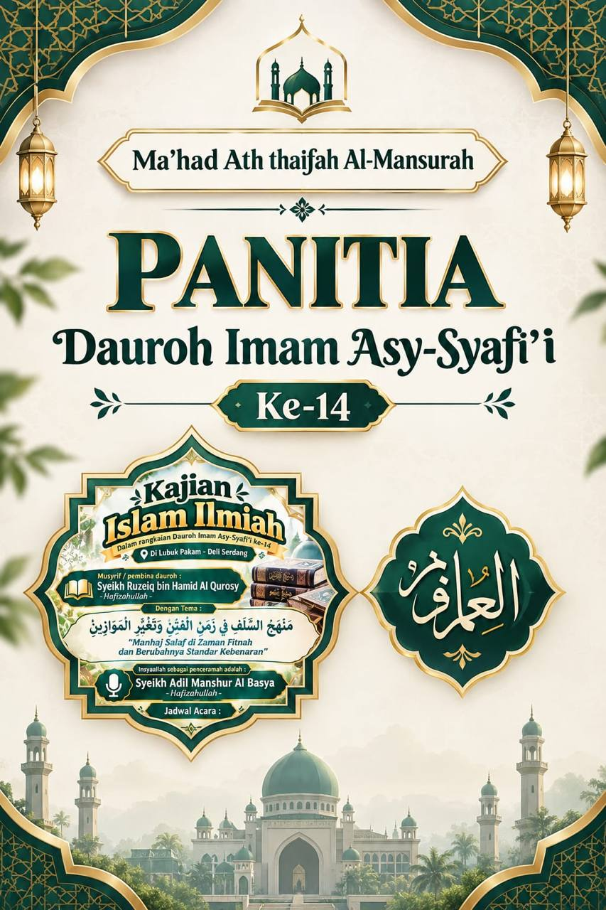

Tahfidz Al-Qur'an
Hafalan dengan metode talaqqi dan muraja'ah harian, target mutqin.
Dauroh Imam Asy-Syafi'i ke-14 — bersama Syeikh Adil Manshur Al Basya hafizhahullah, insyaAllah segera hadir. Info lengkap →
بِسْمِ اللّٰهِ الرَّحْمٰنِ الرَّحِيْمِ
Pondok Pesantren · Deli SerdangPendidikan Al-Qur'an, ilmu syar'i, dan bahasa Arab di lingkungan yang tenang, disiplin, dan penuh kasih sayang di Lubuk Pakam.
[PLACEHOLDER] Pondok Pesantren Ath-Thoifah Al Manshuroh didirikan pada tahun [....] di Lubuk Pakam, Kabupaten Deli Serdang. Kami membimbing santri untuk menghafal Al-Qur'an, memahami agama dengan benar, dan berakhlak mulia.
[PLACEHOLDER] Menjadi pesantren yang melahirkan generasi berilmu, beramal, dan berakhlak Qur'ani.
[PLACEHOLDER] Pembinaan tahfidz, pengajaran ilmu syar'i, bahasa Arab, serta pembiasaan adab sehari-hari.
Perpaduan hafalan Al-Qur'an, ilmu agama, dan pendidikan umum.
Hafalan dengan metode talaqqi dan muraja'ah harian, target mutqin.
Aqidah, fiqih, hadits, tafsir, dan sirah nabawiyah secara bertahap.
Nahwu, sharaf, dan praktik percakapan sebagai kunci memahami kitab.
Pembinaan akhlak, kemandirian, dan kedisiplinan dalam kehidupan asrama.
[PLACEHOLDER] Contoh jadwal harian — sesuaikan dengan jadwal asli.
Sholat malam & Subuh berjamaah
Setoran hafalan baru
Diniyah & pelajaran umum
Nahwu, sharaf, muhadatsah
Kegiatan & ekstrakurikuler
Mengulang hafalan & belajar
Kajian Islam Ilmiah dalam rangkaian Dauroh Imam Asy-Syafi'i ke-14, bertema "Manhaj Salaf di Zaman Fitnah dan Berubahnya Standar Kebenaran" (منهج السلف في زمن الفتن وتغيّر الموازين).

Kuota terbatas. Hubungi panitia melalui WhatsApp atau isi formulir online.
[PLACEHOLDER] Alhamdulillah, santri menyelesaikan hafalan...
[PLACEHOLDER] Kegiatan rutin bulanan untuk orang tua...
[PLACEHOLDER] Menyambut santri baru di asrama...
Jl. Benteng Link. 1, Kel. Paluh Kemiri, Kec. Lubuk Pakam, Kab. Deli Serdang, Sumatera Utara